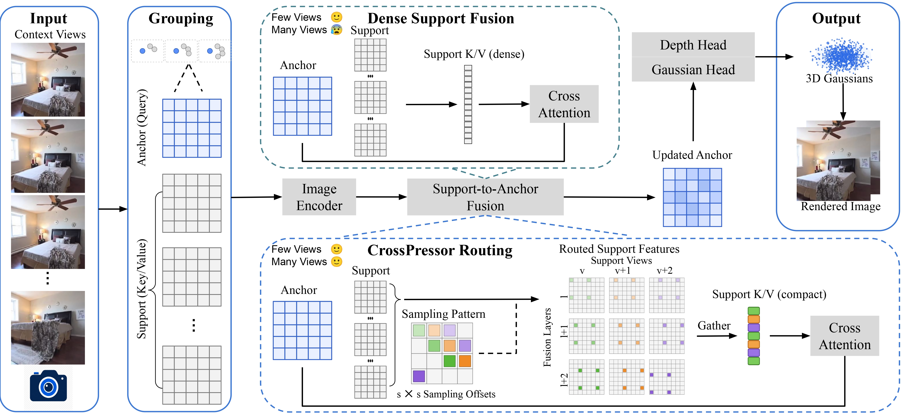
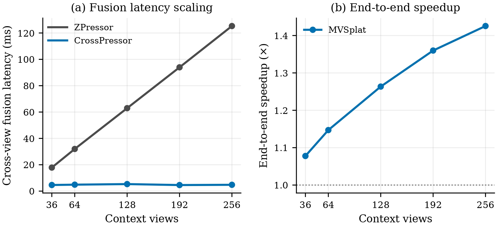
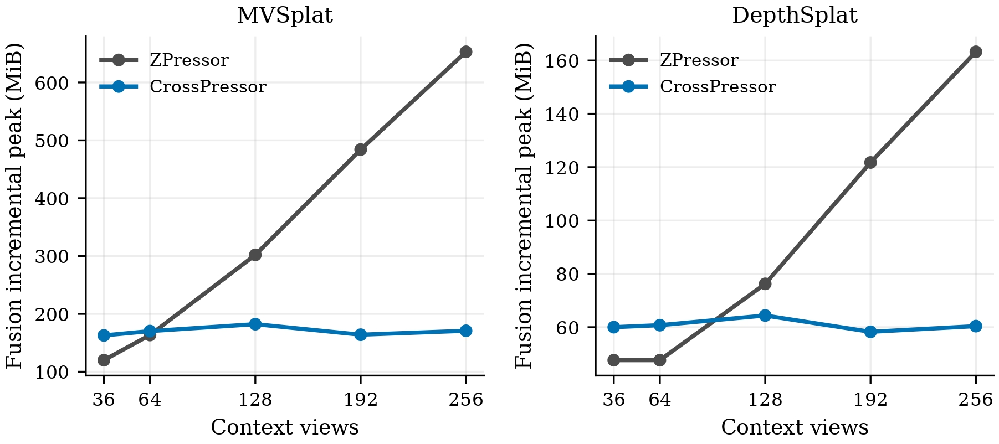

Abstract
Feed-forward 3D Gaussian Splatting (3D-GS) becomes increasingly difficult to scale to long multi-view sequences. Anchor-based compression methods such as ZPressor alleviate representation growth by decoding Gaussians only from a compact set of anchor feature maps, but keeping these anchors fixed forces each one to aggregate an increasing number of support views. We identify this representation–fusion mismatch and introduce CrossPressor, a training-free method for scalable anchor-based fusion. CrossPressor preserves all decoder-facing anchor queries while constraining the view-growing support sequence through coverage-cycled evidence routing, distributing retained spatial evidence across support views and fusion layers while keeping all support views represented. Routing before K/V projection, together with joint context packing, further reduces support-side fusion cost without retraining. CrossPressor maintains reconstruction quality close to dense fusion while achieving up to 26.12× faster cross-view fusion and 1.43× end-to-end acceleration on long input sequences.
Pipeline

The overall architecture. We keep the original ZPressor pipeline unchanged, including anchor selection, anchor– support grouping, the anchor-query pathway, and the downstream prediction modules. One representative anchor–support group is expanded to compare the fusion stage. The original dense fusion (top) uses all support features as K/V evidence for cross-attention, whereas CrossPressor (bottom) preserves the full anchor-query pathway and routes only the support-side features before K/V projection. For cluster stride sc, the sc×sc grid enumerates the sc2 possible spatial sampling offsets. We index the offset assigned to support view v at fusion layer ℓ by pc,vℓ = (rc(v) + κℓ) mod sc2, where rc(v) is the support-view rank and κ is the layer-wise increment. Moving across support views advances the sampling pattern by one offset, while moving across fusion layers advances it by κ, distributing the retained spatial evidence across both dimensions. The selected support features are gathered and packed into a compact sequence before the original K/V projection and cross-attention, producing the same updated-anchor interface for the unchanged downstream prediction pipeline.

Runtime scaling on MVSplat–ZPressor. As the number of context views increases, dense cross-view fusion becomes progressively more expensive, whereas CrossPressor remains nearly flat. The resulting end-to-end speedup reaches 1.43× at 256 views.

Fusion-memory scaling on MVSplat–ZPressor and DepthSplat–ZPressor. As the number of context views increases, dense fusion memory grows steadily, whereas the fusion-only incremental peak of CrossPressor remains nearly flat. On MVSplat–ZPressor, the resulting reduction reaches 73.8% at 256 views.
BibTeX
@inproceedings{hu2027cross,
title = {CrossPressor: Scalable Cross-View Fusion for Feed-Forward 3D Gaussian Splatting},
author = {Hu, Yuxi and Dong, Wenhao and Zhang, Jun and Fraundorfer, Friedrich},
booktitle = {IEEE/CVF Winter Conference on Applications of Computer Vision (WACV)},
year = {2027}
}